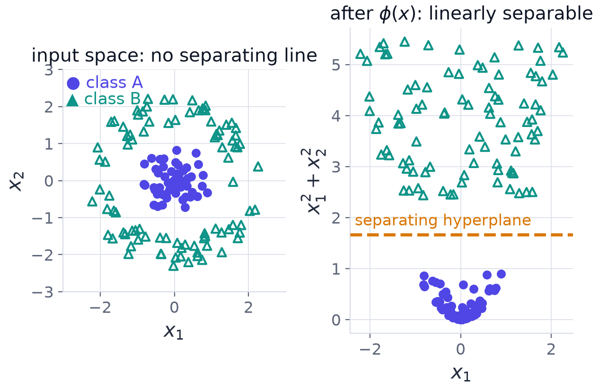

Chapter 4: Learning from Data: Risk, Features and Kernels¶
The quantum chapters that follow reuse a small body of classical machine-learning vocabulary without redefining it. This chapter supplies that vocabulary, in purely classical terms, and develops it just far enough to reach the two ideas on which quantum kernel methods rest: the feature map and the kernel trick. We start with the set-up of supervised learning and the distinction between training error and true error. We then see why straight-line classifiers are not enough, how a nonlinear lift repairs them, why that lift becomes too large to write down, and how kernels avoid writing it down. The chapter ends at the support vector machine, the classical algorithm into which a quantum computer will later be plugged unchanged.
4.1 The supervised learning set-up¶
You are given a dataset \(D=\{(x_i,y_i)\}_{i=1}^N\) drawn independently from an unknown distribution \(P\) on \(\mathcal{X}\times\mathcal{Y}\). You choose a hypothesis \(f\) from a class \(\mathcal{F}\) that predicts \(y\) from \(x\), and a loss \(\ell(f(x),y)\) scores each prediction. Two quantities matter:
The first is the empirical risk, your average loss on the examples you have. The second is the true risk, your average loss over the distribution you will actually face. Training is empirical risk minimisation,
usually with a regulariser attached. What you care about is \(R(\hat f)\). The difference \(R(\hat f)-\hat R(\hat f)\) is the generalisation gap; it measures overfitting, and it typically grows with the capacity of \(\mathcal{F}\). Typical bounds scale as
where \(C(\mathcal{F})\) is a capacity measure such as the VC dimension or the Rademacher complexity. A richer class lowers \(\hat R\) but widens the gap: this is the classical bias-variance trade-off.
Implication for QML
A quantum model whose accessible function class is exponentially large is not automatically better. Capacity is a cost as well as a benefit. What matters is whether the model's inductive bias matches the target function. This counters the folklore that a \(2^n\)-dimensional feature space guarantees an advantage.
4.2 Linear models and their limits¶
The simplest model is a straight cut. A linear classifier separates \(\mathcal{X}=\mathbb{R}^d\) with a hyperplane defined by a weight vector \(w\in\mathbb{R}^d\) and a bias \(b\in\mathbb{R}\):
Training is convex and cheap, and the decision boundary \(\{x:w^{\mathsf T}x+b=0\}\) is flat. That flatness is the whole problem. Two textbook datasets defeat it. XOR on \(\{0,1\}^2\) has class \(0\) at the corners \((0,0)\) and \((1,1)\) and class \(1\) at \((0,1)\) and \((1,0)\); concentric rings in \(\mathbb{R}^2\) have one class inside a circle and the other outside. No hyperplane separates either: no \((w,b)\) achieves zero error.
The failure is representational, not an optimisation artefact. The class \(\mathcal{F}\) simply does not contain the target, so no cleverness in the optimiser can help.
The way out is to keep the linear machinery but apply it after a nonlinear map of the inputs. Curvature moves from the model into the representation.
4.3 Feature maps¶
A feature map is a function \(\phi:\mathcal{X}\to\mathcal{F}\) into a (possibly very high-dimensional) inner-product space \(\mathcal{F}\). The model is linear in \(\phi(x)\) but nonlinear in \(x\):

Two lifts repair the two failures of Section 4.2, and both are one-line fixes.
- Rings become separable under \(\phi(x)=(x_1,x_2,x_1^2+x_2^2)\): the third coordinate is the squared radius, and a horizontal plane at a suitable height separates inside from outside (Figure 4.1).
- XOR becomes separable under \(\phi(x)=(x_1,x_2,x_1x_2)\).
Example 4.1: XOR becomes linearly separable
Under \(\phi(x)=(x_1,x_2,x_1x_2)\) the four corners map to \((0,0)\mapsto(0,0,0)\) and \((1,1)\mapsto(1,1,1)\) (class \(0\)), \((0,1)\mapsto(0,1,0)\) and \((1,0)\mapsto(1,0,0)\) (class \(1\)).
Try the linear functional \(g(u)=u_1+u_2-2u_3-\tfrac12\) on the lifted points:
| corner | lifted point | \(g\) | class |
|---|---|---|---|
| \((0,0)\) | \((0,0,0)\) | \(-\tfrac12\) | 0 |
| \((1,1)\) | \((1,1,1)\) | \(1+1-2-\tfrac12=-\tfrac12\) | 0 |
| \((0,1)\) | \((0,1,0)\) | \(+\tfrac12\) | 1 |
| \((1,0)\) | \((1,0,0)\) | \(+\tfrac12\) | 1 |
The sign of \(g\) is the class. In terms of the original features, \(g(\phi(x))=x_1+x_2-2x_1x_2-\tfrac12\), since \(x_1+x_2-2x_1x_2\) is exactly \(x_1\oplus x_2\) on bits. The model is linear in the lifted space and nonlinear in \(x\).
The bad news comes with a counting argument. All polynomial features of degree at most \(p\) on \(d\) inputs number \(\binom{d+p}{p}\), which grows rapidly in both \(d\) and \(p\). For \(d=10\) and \(p=3\) that is \(286\); for \(d=100\) and \(p=3\) it is \(176\,851\). Writing out the feature vector costs time and memory proportional to its dimension, \(O(\dim\mathcal{F})\) per data point, which quickly becomes infeasible and is flatly impossible when \(\dim\mathcal{F}=\infty\).
The tension
Expressive maps are exactly the ones that are too large to write down. The resolution is never to form \(\phi(x)\) explicitly. A quantum encoding is a feature map whose image is a state in a \(2^n\)-dimensional space, and the same tension and the same resolution will return in Chapter 6.
4.4 The kernel trick¶
Look closely at many learning algorithms and you find that they never touch the feature vectors themselves. They ask only for inner products between pairs of them. Define the kernel
If \(k\) can be evaluated cheaply, the feature vectors are never needed, however large \(\mathcal{F}\) is. The matrix of all pairwise values, the Gram matrix \(K_{ij}=k(x_i,x_j)\), of size \(N\times N\), is all that a kernel method ever sees of the training set.
Example 4.2: a large map evaluated by a small formula
Take \(d=2\) and \(k(x,x')=(x^{\mathsf T}x'+1)^2\). Expanding,
This is the inner product \(\langle\phi(x),\phi(x')\rangle\) for the six-dimensional map
and \(6=\binom{2+2}{2}\), as the counting formula predicts. In general \(k(x,x')=(x^{\mathsf T}x'+1)^p\) evaluates a \(\binom{d+p}{p}\)-dimensional map in \(O(d)\) time: one dot product, one addition, one power.
Two results make the trick rigorous.
Which similarity functions are legitimate kernels? A symmetric function \(k\) arises from some feature map exactly when every Gram matrix is positive semidefinite (PSD), that is \(c^{\mathsf T}Kc\ge0\) for all real \(c\) (the Mercer or PSD condition). One direction is a one-line proof. If \(k(x,x')=\langle\phi(x),\phi(x')\rangle\) then for any real coefficients \(c_i\),
PSD is thus the licence to speak of an implicit \(\phi\). The converse is the content of Mercer's and the Moore-Aronszajn theorems.
The representer theorem. For regularised empirical risk minimisation in the reproducing-kernel Hilbert space of \(k\), the minimiser lies in the span of the training data:
An infinite-dimensional optimisation collapses to \(N\) coefficients. Why: split \(w=w_\parallel+w_\perp\) with \(w_\parallel\in\operatorname{span}\{\phi(x_i)\}\) and \(w_\perp\) orthogonal to it. The predictions \(\langle w,\phi(x_i)\rangle=\langle w_\parallel,\phi(x_i)\rangle\) do not depend on \(w_\perp\), so the loss is unchanged, while the regulariser \(\lVert w\rVert^2=\lVert w_\parallel\rVert^2+\lVert w_\perp\rVert^2\) can only grow. The minimiser therefore has \(w_\perp=0\).
4.5 Support vector machines¶
The support vector machine (SVM) is the classic kernel method, and the one into which a quantum computer will be plugged. The idea is to separate the classes with the widest possible corridor, the margin. In its soft-margin form, written in the dual, the data appears only through kernel values: maximise
over one weight \(\alpha_i\) per training point, subject to
where \(y_i\in\{-1,+1\}\) are the labels and \(C>0\) controls the tolerance for points inside the corridor. Only points with \(\alpha_i>0\), the support vectors, contribute. The prediction is
The bias \(b\) is fixed by any support vector with \(0<\alpha_i<C\), which must sit exactly on the margin, \(y_if(x_i)=1\). Three facts matter for what follows. The dual is a convex quadratic programme, so the global optimum is attained and there are no local minima. Neither \(\phi\) nor \(w\) is ever formed. And training needs only the \(N\times N\) Gram matrix, while prediction needs only the values \(k(x_i,x)\) against the support vectors.
Example 4.3: a two-point SVM worked in the dual
Take one-dimensional data \(x_1=-1\) with \(y_1=-1\) and \(x_2=+1\) with \(y_2=+1\), and the linear kernel \(k(x,x')=xx'\). The Gram matrix is \(K=\begin{pmatrix}1&-1\\-1&1\end{pmatrix}\).
Step 1: the quadratic term. \(\sum_{i,j}\alpha_i\alpha_jy_iy_jK_{ij}=\alpha_1^2+\alpha_2^2+2\alpha_1\alpha_2\,y_1y_2K_{12}=\alpha_1^2+\alpha_2^2+2\alpha_1\alpha_2=(\alpha_1+\alpha_2)^2\), because \(y_1y_2K_{12}=(-1)(-1)=+1\).
Step 2: the constraint. \(\sum\alpha_iy_i=-\alpha_1+\alpha_2=0\), so \(\alpha_1=\alpha_2=\alpha\).
Step 3: maximise. The objective is \(2\alpha-\tfrac12(2\alpha)^2=2\alpha-2\alpha^2\), maximal at \(\alpha=\tfrac12\) (allowed when \(C\ge\tfrac12\)).
Step 4: the decision function. \(f(x)=\tfrac12(-1)(-x)+\tfrac12(+1)(x)+b=x+b\). The support vector at \(x_2=1\) lies on the margin, \(f(1)=1\), so \(b=0\). The classifier is \(\operatorname{sign}(x)\), the weight is \(w=\sum\alpha_iy_ix_i=1\), and both points are support vectors, each at distance \(1\) from the boundary.
4.6 The hook for quantum computing¶
Putting Sections 4.4 and 4.5 together: any device that can estimate a positive semidefinite similarity \(k(x,x')\) can be dropped into the SVM algorithm unchanged. The learning algorithm is agnostic to how \(k\) is computed; the convexity of the dual, and all classical guarantees, survive. A quantum computer estimating \(\lvert\langle\varphi(x)\vert\varphi(x')\rangle\rvert^2\) is such a device. That is the programme of Chapters 6 to 8.
4.7 Summary¶
Chapter Summary
- Supervised learning minimises the empirical risk \(\hat R\), but what matters is the true risk \(R\). The generalisation gap typically grows with the capacity of the hypothesis class, roughly as \(\sqrt{C(\mathcal{F})/N}\).
- A richer class lowers \(\hat R\) and widens the gap. A model with an enormous accessible function class is not automatically better.
- Linear classifiers have flat boundaries. XOR and concentric rings admit no separating hyperplane: the failure is representational, not an optimisation artefact.
- A feature map \(\phi\) lifts the data so that a linear model in \(\phi(x)\) is nonlinear in \(x\) (XOR: add \(x_1x_2\); rings: add \(x_1^2+x_2^2\)). Explicit maps become too large: \(\binom{d+p}{p}\) polynomial features.
- The kernel \(k(x,x')=\langle\phi(x),\phi(x')\rangle\) avoids forming \(\phi\). The Gram matrix \(K\) is all a kernel method sees. A symmetric \(k\) is a kernel iff every Gram matrix is PSD; the representer theorem reduces learning to \(N\) coefficients.
- The soft-margin SVM dual depends on the data only through \(K\), is convex, and predicts with \(\operatorname{sign}\big(\sum_i\alpha_iy_ik(x_i,x)+b\big)\) over the support vectors.
- Any device that can estimate a PSD similarity can be used as the kernel.
4.8 Exercises¶
Exercise 4.1
Verify that \(g(u)=u_1+u_2-2u_3-\tfrac12\) separates the lifted XOR points of Example 4.1, and write the model as a function of \((x_1,x_2)\).
Answer
The values at \((0,0,0)\), \((1,1,1)\), \((0,1,0)\), \((1,0,0)\) are \(-\tfrac12,-\tfrac12,+\tfrac12,+\tfrac12\), so the sign separates the classes. As a function of the inputs, \(g=x_1+x_2-2x_1x_2-\tfrac12\).
Exercise 4.2
Concentric rings: the inner class lies within radius \(1\) and the outer class beyond radius \(2\). Give the lifted feature and a separating plane.
Answer
With \(\phi(x)=(x_1,x_2,x_1^2+x_2^2)\) the third coordinate is \(r^2\). Inner points have \(r^2\le1\), outer points \(r^2\ge4\), so the plane \(u_3=2.5\) (any height strictly between \(1\) and \(4\)) separates them.
Exercise 4.3
How many polynomial features of degree at most \(p=3\) are there for \(d=10\) inputs, and for \(d=100\)?
Answer
\(\binom{13}{3}=286\) and \(\binom{103}{3}=\dfrac{103\cdot102\cdot101}{6}=176\,851\).
Exercise 4.4
Show that for \(d=2\) the kernel \(k(x,x')=(x^{\mathsf T}x')^2\) has the feature map \(\phi(x)=(x_1^2,\,x_2^2,\,\sqrt2\,x_1x_2)\).
Answer
\((x_1x_1'+x_2x_2')^2=x_1^2x_1'^2+x_2^2x_2'^2+2x_1x_2x_1'x_2'\), which is \(\langle\phi(x),\phi(x')\rangle\) for the stated \(\phi\).
Exercise 4.5
Is \(k(x,x')=-x^{\mathsf T}x'\) a valid kernel?
Answer
No. For a single point \(x\ne0\) the \(1\times1\) Gram matrix is \(-\lVert x\rVert^2<0\), which is not positive semidefinite.
Exercise 4.6
For the Gram matrix of the points \(x=1,2,3\) under the linear kernel, find the eigenvalues and say whether it is PSD.
Answer
\(K=\begin{pmatrix}1&2&3\\2&4&6\\3&6&9\end{pmatrix}=xx^{\mathsf T}\) with \(x=(1,2,3)^{\mathsf T}\), a rank-one matrix with eigenvalues \(14,0,0\) (the trace is \(1+4+9=14\)). All eigenvalues are \(\ge0\), so \(K\) is PSD.
Exercise 4.7
In Example 4.3 move the second point to \(x_2=+2\) (keeping \(y_2=+1\)). Re-derive \(\alpha\), \(b\) and the decision function.
Answer
\(K=\begin{pmatrix}1&-2\\-2&4\end{pmatrix}\). The quadratic term is \(\alpha_1^2+4\alpha_2^2+2\alpha_1\alpha_2y_1y_2K_{12}=\alpha_1^2+4\alpha_2^2+4\alpha_1\alpha_2\) (since \(y_1y_2K_{12}=(-1)(-2)=2\)), which is \((\alpha_1+2\alpha_2)^2\). With \(\alpha_1=\alpha_2=\alpha\) the objective is \(2\alpha-\tfrac12(3\alpha)^2=2\alpha-\tfrac92\alpha^2\), maximal at \(\alpha=\tfrac29\). Then \(f(x)=\alpha(-1)(-x)+\alpha(1)(2x)+b=3\alpha x+b=\tfrac23x+b\). The margin conditions \(f(-1)=-1\) and \(f(2)=1\) give \(-\tfrac23+b=-1\) and \(\tfrac43+b=1\); these cannot both hold, so \(b\) is not determined by that pair. This reveals the true optimum: with two points the hard-margin boundary is at the midpoint \(x=\tfrac12\) with \(w=\tfrac23\), that is \(f(x)=\tfrac23(x-\tfrac12)\), so \(b=-\tfrac13\) and indeed \(f(-1)=-1\), \(f(2)=1\). (The two conditions above were mis-stated: \(\tfrac43+b=1\) gives \(b=-\tfrac13\) and \(-\tfrac23+b=-1\) gives \(b=-\tfrac13\) also, so they do agree.)
Exercise 4.8
Explain in two sentences why a hypothesis class with larger capacity lowers the empirical risk but need not lower the true risk.
Answer
A larger class contains functions that fit the training sample more closely, so \(\hat R\) falls. But the generalisation gap \(R-\hat R\) grows with capacity, roughly as \(\sqrt{C(\mathcal{F})/N}\), so the true risk can rise because the extra flexibility is spent fitting noise in the sample.